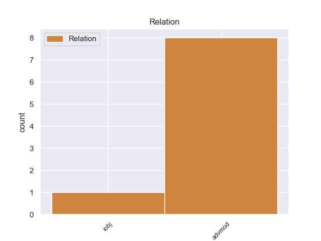
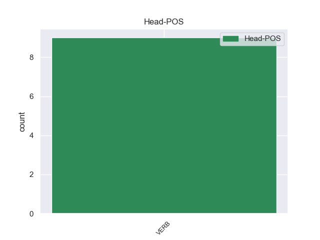
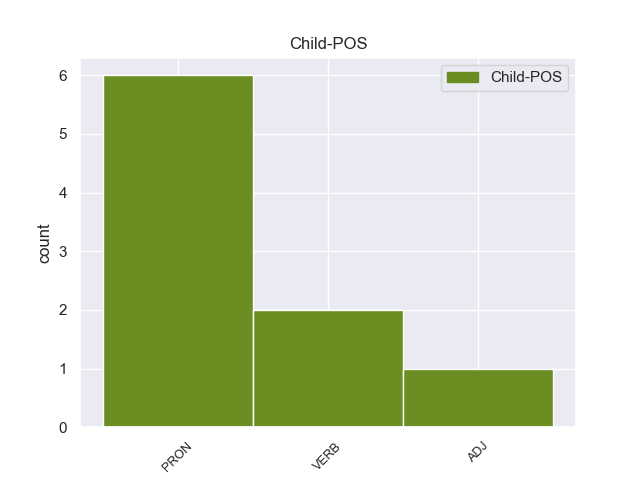

Distribution of features within this leaf



Agreement Rules sorted by frequency.
- When the dependent token is the adverbial modifier(advmod) of the head token, and the dependent token is VERB.
1 Λίγο _ _ _ _ 0 _ _ _
2 πριν _ _ _ _ 0 _ _ _
3 την _ _ _ _ 0 _ _ _
4 έκθεση _ _ _ _ 0 _ _ _
5 έγινε έγινε VERB _ Aspect=Perf|Mood=Ind|Number=Sing|Person=3|Tense=Past|VerbForm=Fin|Voice=Act 0 _ _ _
6 γνωστό γνωστό VERB _ Aspect=Perf|Mood=Ind|Number=Sing|Person=3|Tense=Past|VerbForm=Fin|Voice=Act 5 advmod _ _
7 ότι _ _ _ _ 0 _ _ _
8 οι _ _ _ _ 0 _ _ _
9 κρατήσεις _ _ _ _ 0 _ _ _
10 από _ _ _ _ 0 _ _ _
11 τη _ _ _ _ 0 _ _ _
12 Γερμανία _ _ _ _ 0 _ _ _
13 σ _ _ _ _ 0 _ _ _
14 την _ _ _ _ 0 _ _ _
15 Ελλάδα _ _ _ _ 0 _ _ _
16 μειώθηκαν _ _ _ _ 0 _ _ _
17 κατά _ _ _ _ 0 _ _ _
18 30% _ _ _ _ 0 _ _ _
19 , _ _ _ _ 0 _ _ _
20 ενώ _ _ _ _ 0 _ _ _
21 επίσημα _ _ _ _ 0 _ _ _
22 στοχεία _ _ _ _ 0 _ _ _
23 αναφέρουν _ _ _ _ 0 _ _ _
24 ότι _ _ _ _ 0 _ _ _
25 την _ _ _ _ 0 _ _ _
26 Ελλάδα _ _ _ _ 0 _ _ _
27 , _ _ _ _ 0 _ _ _
28 κατά _ _ _ _ 0 _ _ _
29 το _ _ _ _ 0 _ _ _
30 2011 _ _ _ _ 0 _ _ _
31 , _ _ _ _ 0 _ _ _
32 επισκέπτηκαν _ _ _ _ 0 _ _ _
33 2.240.000 _ _ _ _ 0 _ _ _
34 Γερμανοί _ _ _ _ 0 _ _ _
35 , _ _ _ _ 0 _ _ _
36 έχοντας _ _ _ _ 0 _ _ _
37 δαπανήσει _ _ _ _ 0 _ _ _
38 1.8 _ _ _ _ 0 _ _ _
39 δισεκατομμύρια _ _ _ _ 0 _ _ _
40 ευρώ _ _ _ _ 0 _ _ _
41 . _ _ _ _ 0 _ _ _
1 Το _ _ _ _ 0 _ _ _
2 εκεί _ _ _ _ 0 _ _ _
3 έξω _ _ _ _ 0 _ _ _
4 είναι _ _ _ _ 0 _ _ _
5 που _ _ _ _ 0 _ _ _
6 μας μας PRON _ Case=Gen|Gender=Masc|Number=Plur|Person=1|Poss=Yes|PronType=Prs 7 advmod _ _
7 ενδιαφέρει ενδιαφέρει VERB _ Aspect=Imp|Mood=Ind|Number=Plur|Person=1|Tense=Pres|VerbForm=Fin|Voice=Act 0 _ _ _
8 πραγματικά _ _ _ _ 0 _ _ _
9 . _ _ _ _ 0 _ _ _
Disagree Examples:
1 Επιτρέψτε επιτρέπω VERB VERB Aspect=Perf|Mood=Imp|Number=Plur|Person=2|VerbForm=Fin|Voice=Act 0 _ _ _
2 μου εγώ PRON PRON Case=Gen|Gender=Masc|Number=Sing|Person=1|PronType=Prs 1 iobj _ SpaceAfter=No
3 , _ _ _ _ 0 _ _ _
4 κύριε _ _ _ _ 0 _ _ _
5 Πρόεδρε _ _ _ _ 0 _ _ _
6 , _ _ _ _ 0 _ _ _
7 να _ _ _ _ 0 _ _ _
8 αναλύσω _ _ _ _ 0 _ _ _
9 τους _ _ _ _ 0 _ _ _
10 έξι _ _ _ _ 0 _ _ _
11 στόχους _ _ _ _ 0 _ _ _
12 της _ _ _ _ 0 _ _ _
13 ισπανικής _ _ _ _ 0 _ _ _
14 Προεδρίας _ _ _ _ 0 _ _ _
15 που _ _ _ _ 0 _ _ _
16 εσείς _ _ _ _ 0 _ _ _
17 συνοψίσατε _ _ _ _ 0 _ _ _
18 σε _ _ _ _ 0 _ _ _
19 τρεις _ _ _ _ 0 _ _ _
20 κατευθύνσεις _ _ _ _ 0 _ _ _
21 , _ _ _ _ 0 _ _ _
22 υπό _ _ _ _ 0 _ _ _
23 το _ _ _ _ 0 _ _ _
24 πρίσμα _ _ _ _ 0 _ _ _
25 αυτής _ _ _ _ 0 _ _ _
26 της _ _ _ _ 0 _ _ _
27 προσέγγισης _ _ _ _ 0 _ _ _
28 . _ _ _ _ 0 _ _ _
1 Θα _ _ _ _ 0 _ _ _
2 μας μας PRON _ Case=Gen|Gender=Masc|Number=Plur|Person=1|Poss=Yes|PronType=Prs 3 advmod _ _
3 βρίσκουν βρίσκουίσκω VERB _ Aspect=Imp|Mood=Ind|Number=Sing|Person=3|Tense=Pres|VerbForm=Fin|Voice=Act 0 _ _ _
4 εδώ _ _ _ _ 0 _ _ _
5 , _ _ _ _ 0 _ _ _
6 να _ _ _ _ 0 _ _ _
7 τους _ _ _ _ 0 _ _ _
8 υποστηρίζουμε _ _ _ _ 0 _ _ _
9 σ _ _ _ _ 0 _ _ _
10 τις _ _ _ _ 0 _ _ _
11 πρωτοβουλίες _ _ _ _ 0 _ _ _
12 τους _ _ _ _ 0 _ _ _
13 και _ _ _ _ 0 _ _ _
14 σ' _ _ _ _ 0 _ _ _
15 αυτές _ _ _ _ 0 _ _ _
16 που _ _ _ _ 0 _ _ _
17 εμείς _ _ _ _ 0 _ _ _
18 οι _ _ _ _ 0 _ _ _
19 ίδιοι _ _ _ _ 0 _ _ _
20 μπορεί _ _ _ _ 0 _ _ _
21 να _ _ _ _ 0 _ _ _
22 παρουσιάσουμε _ _ _ _ 0 _ _ _
23 , _ _ _ _ 0 _ _ _
24 αλλά _ _ _ _ 0 _ _ _
25 δεν _ _ _ _ 0 _ _ _
26 πιστεύω _ _ _ _ 0 _ _ _
27 ότι _ _ _ _ 0 _ _ _
28 πρέπει _ _ _ _ 0 _ _ _
29 να _ _ _ _ 0 _ _ _
30 ψηφίσουμε _ _ _ _ 0 _ _ _
31 αύριο _ _ _ _ 0 _ _ _
32 ή _ _ _ _ 0 _ _ _
33 σήμερα _ _ _ _ 0 _ _ _
34 υπέρ _ _ _ _ 0 _ _ _
35 αυτών _ _ _ _ 0 _ _ _
36 των _ _ _ _ 0 _ _ _
37 τροπολογιών _ _ _ _ 0 _ _ _
38 . _ _ _ _ 0 _ _ _
1 Γι' _ _ _ _ 0 _ _ _
2 αυτό _ _ _ _ 0 _ _ _
3 το _ _ _ _ 0 _ _ _
4 λόγο _ _ _ _ 0 _ _ _
5 - _ _ _ _ 0 _ _ _
6 όπως _ _ _ _ 0 _ _ _
7 είπατε _ _ _ _ 0 _ _ _
8 - _ _ _ _ 0 _ _ _
9 μας μας PRON _ Case=Gen|Gender=Masc|Number=Plur|Person=1|Poss=Yes|PronType=Prs 11 advmod _ _
10 είναι _ _ _ _ 0 _ _ _
11 δύσκολο δύσκολο VERB _ Aspect=Imp|Mood=Ind|Number=Sing|Person=3|Tense=Pres|VerbForm=Fin|Voice=Act 0 _ _ _
12 να _ _ _ _ 0 _ _ _
13 δεχτούμε _ _ _ _ 0 _ _ _
14 τον _ _ _ _ 0 _ _ _
15 τρόπο _ _ _ _ 0 _ _ _
16 με _ _ _ _ 0 _ _ _
17 τον _ _ _ _ 0 _ _ _
18 οποίο _ _ _ _ 0 _ _ _
19 λήφθηκαν _ _ _ _ 0 _ _ _
20 σ _ _ _ _ 0 _ _ _
21 τις _ _ _ _ 0 _ _ _
22 27_Δεκεμβρίου _ _ _ _ 0 _ _ _
23 οι _ _ _ _ 0 _ _ _
24 αποφάσεις _ _ _ _ 0 _ _ _
25 σχετικά _ _ _ _ 0 _ _ _
26 με _ _ _ _ 0 _ _ _
27 τα _ _ _ _ 0 _ _ _
28 τέσσερα _ _ _ _ 0 _ _ _
29 νομοθετικά _ _ _ _ 0 _ _ _
30 μέσα _ _ _ _ 0 _ _ _
31 για _ _ _ _ 0 _ _ _
32 τη _ _ _ _ 0 _ _ _
33 δημιουργία _ _ _ _ 0 _ _ _
34 ενός _ _ _ _ 0 _ _ _
35 καταλόγου _ _ _ _ 0 _ _ _
36 τρομοκρατών _ _ _ _ 0 _ _ _
37 σ _ _ _ _ 0 _ _ _
38 την _ _ _ _ 0 _ _ _
39 Ευρωπαϊκή _ _ _ _ 0 _ _ _
40 Ένωση _ _ _ _ 0 _ _ _
41 . _ _ _ _ 0 _ _ _
1 Με _ _ _ _ 0 _ _ _
2 αυτό _ _ _ _ 0 _ _ _
3 μας μας PRON _ Case=Gen|Gender=Masc|Number=Plur|Person=1|Poss=Yes|PronType=Prs 4 advmod _ _
4 δίνεται δίνεται VERB _ Aspect=Imp|Mood=Ind|Number=Sing|Person=3|Tense=Pres|VerbForm=Fin|Voice=Act 0 _ _ _
5 η _ _ _ _ 0 _ _ _
6 ευκαιρία _ _ _ _ 0 _ _ _
7 να _ _ _ _ 0 _ _ _
8 προβούμε _ _ _ _ 0 _ _ _
9 σε _ _ _ _ 0 _ _ _
10 έναν _ _ _ _ 0 _ _ _
11 ενδιάμεσο _ _ _ _ 0 _ _ _
12 απολογισμό _ _ _ _ 0 _ _ _
13 σε _ _ _ _ 0 _ _ _
14 ό,τι _ _ _ _ 0 _ _ _
15 αφορά _ _ _ _ 0 _ _ _
16 τα _ _ _ _ 0 _ _ _
17 ανθρώπινα _ _ _ _ 0 _ _ _
18 δικαιώματα _ _ _ _ 0 _ _ _
19 σ _ _ _ _ 0 _ _ _
20 την _ _ _ _ 0 _ _ _
21 Τουρκία _ _ _ _ 0 _ _ _
22 και _ _ _ _ 0 _ _ _
23 τη _ _ _ _ 0 _ _ _
24 σημειωθείσα _ _ _ _ 0 _ _ _
25 πρόοδο _ _ _ _ 0 _ _ _
26 σ _ _ _ _ 0 _ _ _
27 τον _ _ _ _ 0 _ _ _
28 τομέα _ _ _ _ 0 _ _ _
29 των _ _ _ _ 0 _ _ _
30 πολιτικών _ _ _ _ 0 _ _ _
31 μεταρρυθμίσεων _ _ _ _ 0 _ _ _
32 . _ _ _ _ 0 _ _ _
1 Επιτυχία επιτυχία VERB _ Aspect=Imp|Mood=Ind|Number=Sing|Person=1|Tense=Pres|VerbForm=Fin|Voice=Act 8 advmod _ _
2 επίσης _ _ _ _ 0 _ _ _
3 , _ _ _ _ 0 _ _ _
4 και _ _ _ _ 0 _ _ _
5 αυτή _ _ _ _ 0 _ _ _
6 τη _ _ _ _ 0 _ _ _
7 φορά _ _ _ _ 0 _ _ _
8 μπορούμε μπορούμε VERB _ Aspect=Imp|Mood=Ind|Number=Sing|Person=3|Tense=Pres|VerbForm=Fin|Voice=Act 0 _ _ _
9 να _ _ _ _ 0 _ _ _
10 το _ _ _ _ 0 _ _ _
11 πούμε _ _ _ _ 0 _ _ _
12 , _ _ _ _ 0 _ _ _
13 της _ _ _ _ 0 _ _ _
14 Επιτροπής _ _ _ _ 0 _ _ _
15 , _ _ _ _ 0 _ _ _
16 η _ _ _ _ 0 _ _ _
17 οποία _ _ _ _ 0 _ _ _
18 ήταν _ _ _ _ 0 _ _ _
19 υπεύθυνη _ _ _ _ 0 _ _ _
20 για _ _ _ _ 0 _ _ _
21 το _ _ _ _ 0 _ _ _
22 εγχείρημα _ _ _ _ 0 _ _ _
23 , _ _ _ _ 0 _ _ _
24 του _ _ _ _ 0 _ _ _
25 Προέδρου _ _ _ _ 0 _ _ _
26 Πρόντι _ _ _ _ 0 _ _ _
27 , _ _ _ _ 0 _ _ _
28 ο _ _ _ _ 0 _ _ _
29 οποίος _ _ _ _ 0 _ _ _
30 , _ _ _ _ 0 _ _ _
31 όταν _ _ _ _ 0 _ _ _
32 ήταν _ _ _ _ 0 _ _ _
33 Πρόεδρος _ _ _ _ 0 _ _ _
34 του _ _ _ _ 0 _ _ _
35 Ecofin _ _ _ _ 0 _ _ _
36 , _ _ _ _ 0 _ _ _
37 κατέστησε _ _ _ _ 0 _ _ _
38 δυνατή _ _ _ _ 0 _ _ _
39 την _ _ _ _ 0 _ _ _
40 είσοδο _ _ _ _ 0 _ _ _
41 της _ _ _ _ 0 _ _ _
42 Ιταλίας _ _ _ _ 0 _ _ _
43 σ _ _ _ _ 0 _ _ _
44 το _ _ _ _ 0 _ _ _
45 ευρώ _ _ _ _ 0 _ _ _
46 με _ _ _ _ 0 _ _ _
47 τον _ _ _ _ 0 _ _ _
48 σημερινό _ _ _ _ 0 _ _ _
49 Πρόεδρο _ _ _ _ 0 _ _ _
50 της _ _ _ _ 0 _ _ _
51 Δημοκρατίας _ _ _ _ 0 _ _ _
52 , _ _ _ _ 0 _ _ _
53 μίας _ _ _ _ 0 _ _ _
54 χώρας _ _ _ _ 0 _ _ _
55 της _ _ _ _ 0 _ _ _
56 οποίας _ _ _ _ 0 _ _ _
57 η _ _ _ _ 0 _ _ _
58 τρέχουσα _ _ _ _ 0 _ _ _
59 κυβέρνηση _ _ _ _ 0 _ _ _
60 επέλεξε _ _ _ _ 0 _ _ _
61 την _ _ _ _ 0 _ _ _
62 πρώτη _ _ _ _ 0 _ _ _
63 Ιανουαρίου _ _ _ _ 0 _ _ _
64 , _ _ _ _ 0 _ _ _
65 εν _ _ _ _ 0 _ _ _
66 μέρει _ _ _ _ 0 _ _ _
67 , _ _ _ _ 0 _ _ _
68 να _ _ _ _ 0 _ _ _
69 δυσφημίσει _ _ _ _ 0 _ _ _
70 το _ _ _ _ 0 _ _ _
71 κοινό _ _ _ _ 0 _ _ _
72 νόμισμα _ _ _ _ 0 _ _ _
73 . _ _ _ _ 0 _ _ _